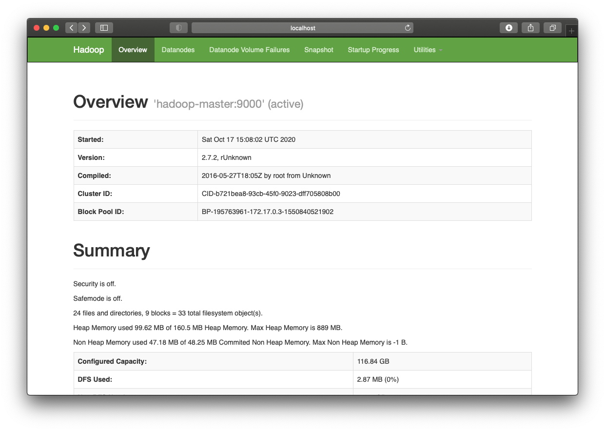

Sommaire
Map-reduce, avec Hadoop¶
Étant donnée l’installation précédente, nous allons exploiter le parallélisme de votre processeur, souvent constitué de 4 cœurs, et donc susceptible de lancer 4 instructions en parallèle. Parmi ces 4 cœurs, nous n’en exploiterons que 3 (1 pour le Namenode et 2 pour les Datanodes), le dernier cœur étant à disposition de votre machine pour toutes les autres tâches.
Lancement du daemon Hadoop¶
La première chose à faire sur le Terminal connecté au hadoop-master est de lancer les daemon Hadoop :
./start-hadoop.sh
Le résultat de l’exécution de ce script ressemblera à :
Starting namenodes on [hadoop-master]
hadoop-master: Warning: Permanently added 'hadoop-master,172.18.0.4' (ECDSA) to the list of known hosts.
hadoop-master: starting namenode, logging to /usr/local/hadoop/logs/hadoop-root-namenode-hadoop-master.out
hadoop-slave2: Warning: Permanently added 'hadoop-slave2,172.18.0.2' (ECDSA) to the list of known hosts.
hadoop-slave1: Warning: Permanently added 'hadoop-slave1,172.18.0.3' (ECDSA) to the list of known hosts.
hadoop-slave2: starting datanode, logging to /usr/local/hadoop/logs/hadoop-root-datanode-hadoop-slave2.out
hadoop-slave1: starting datanode, logging to /usr/local/hadoop/logs/hadoop-root-datanode-hadoop-slave1.out
Starting secondary namenodes [0.0.0.0]
0.0.0.0: starting secondarynamenode, logging to /usr/local/hadoop/logs/hadoop-root-secondarynamenode-hadoop-master.out
starting yarn daemons
starting resourcemanager, logging to /usr/local/hadoop/logs/yarn--resourcemanager-hadoop-master.out
hadoop-slave1: Warning: Permanently added 'hadoop-slave1,172.18.0.3' (ECDSA) to the list of known hosts.
hadoop-slave2: Warning: Permanently added 'hadoop-slave2,172.18.0.2' (ECDSA) to the list of known hosts.
hadoop-slave1: starting nodemanager, logging to /usr/local/hadoop/logs/yarn-root-nodemanager-hadoop-slave1.out
hadoop-slave2: starting nodemanager, logging to /usr/local/hadoop/logs/yarn-root-nodemanager-hadoop-slave2.out
Préparation des fichiers pour wordcount¶
Remarque importante Le Terminal pointe sur un système Linux qui a son propre mode de stockage de fichier (appelé ext3). Il est alors possible de créer des dossiers, de déposer des fichiers, de les effacer… avec les commandes Linux traditionnelles (
mkdir,rm…). Notons qu’il n’existe pas d’éditeur de texte intégré au container que nous venons d’installer (pour écrire les scripts Python), donc nous aurons recours à une astuce décrite ci-dessous.
C’est sur cet espace que nous stockerons les scripts Python map-reduce qui seront exécutés par Hadoop. Par contre, les fichiers volumineux, ceux pour lesquels nous déploierons des algorithmes de traitement, seront stockés sur une partie de votre disque dur gérée par HDFS (Hadoop Distributed File System). À l’aide de commandes commençant par “hadoop fs -+ commande”, il est possible de créer des dossiers sur HDFS, de copier des fichiers depuis Linux vers HDFS, et de rapatrier des fichiers depuis HDFS vers Linux.
Laissez-vous guider…
- Depuis le Terminal, créez un dossier wordcount et déplacez-vous dedans
mkdir wordcount
cd wordcount
- Téléchargez depuis internet le livre dracula à l’aide de la commande
wget http://www.textfiles.com/etext/FICTION/dracula
- Versez ce fichier volumineux sur l’espace HDFS (après avoir créer un dossier pour le recevoir)
hadoop fs -mkdir -p input
hadoop fs -put dracula input
Vérifiez que le fichier a bien été déposé:
hadoop fs -ls input
ce qui donnera quelque chose comme:
Found 1 items
-rw-r--r-- 2 root supergroup 844505 2020-10-16 05:02 input/dracula
- Supprimer le fichier dracula de votre espace Linux (on n’en a plus besoin!)
rm dracula
Il faut maintenant rapatrier, sur notre espace Linux, les scripts mapper.py et reducer.py que nous avons manipulés durant la première partie de ce TP. Pour cela, il faut ouvrir un second Terminal (laissez le premier ouvert, il va nous resservir!), et vous déplacer dans le dossier de travail qui contient les scripts mapper.py et reducer.py, modifiés par vos soins durant la première partie. La commande suivante permet de copier ces 2 fichiers vers l’espace Linux, dans le dossier wordcount
docker cp mapper.py hadoop-master:/root/wordcount
docker cp reducer.py hadoop-master:/root/wordcount
Retenez la syntaxe, car elle vous sera utile plus tard, pour rapatrier les nouveaux scripts Python que vous aurez développés.
Revenez alors vers le premier Terminal (ne fermez pas le second, il sera utile plus tard), et vérifiez avec la commande ls que les 2 fichiers sont bien présents. Il faut maintenant
- rendre ces 2 scripts exécutables:
chmod +x mapper.py
chmod +x reducer.py
- Pour les utilisateurs de Windows uniquement : il faut aussi convertir les caractères de saut de lignes, qui sont différents entre Windows et Linux. Pour chaque fichier texte (p. ex., fichier.py) que vous rapatrierez depuis votre machine sur le compte Linux, il conviendra de lancer:
dos2unix fichier.py
Il faudra appliquer ce protocole aux fichiers mapper.py et reducer.py, à chaque fois que vous les aurez modifiés sous Windows.
Souvenez-vous de cette manip., car il faudra aussi la mettre en place sur vos nouveaux scripts.
Ça y est, nous sommes prêts à lancer notre premier script map-reduce sous Hadoop!
Wordcount avec Hadoop¶
À partir du premier Terminal, nous allons donc lancer les scripts permettant de compter le nombre de mots sur le fichier du livre dracula.
- Tout d’abord, stockez le lien vers la librairie permettant de programmer avec Python dans une variable système :
export STREAMINGJAR='/usr/local/hadoop/share/hadoop/tools/lib/hadoop-streaming-2.7.2.jar'
Je vous rappelle que Hadoop map-reduce fonctionne avec le langage Java ; il faut donc utiliser une bibliothèque capable de transformer des instructions Python en instruction Java. C’est le rôle de cette bibliothèque hadoop-streaming-2.7.2.jar (on appelle cela un wrapper).
- Ensuite, lancez le job Hadoop avec l’instruction suivante (copiez tout le bloc d’instrcution et collez-le dans le Terminal):
hadoop jar $STREAMINGJAR -input input/dracula -output sortie -mapper mapper.py -reducer reducer.py -file mapper.py -file reducer.py
Les options -file permettent de copier les fichiers nécessaires pour qu’ils soit exécutés sur tous les nœuds du cluster. Le résultat du comptage de mots est stocké dans le dossier sortie sous HDFS. Vous pouvez voir son contenu en lançant la commande:
hadoop fs -ls sortie/
qui donnera quelque chose comme
Found 2 items
-rw-r--r-- 2 root supergroup 0 2020-10-16 06:58 sortie/_SUCCESS
-rw-r--r-- 2 root supergroup 25 2020-10-16 06:58 sortie/part-00000
Le premier fichier _SUCCESS est un fichier vide (0 octet!), dont la simple présence indique que le job s’est terminé avec succès. Le second fichier part-00000 contient le résultat de l’algorithme. Vous pouvez visualiser les dernières lignes du fichier avec la commande :
hadoop fs -tail sortie/part-00000
ou voir tout le fichier avec la commande :
hadoop fs -cat sortie/part-00000
Le résultat devrait être exactement le même que lors de la première partie du TP.
Remarque - N’oubliez pas! : Entre 2 exécutions, il faut soit utiliser un nouveau nom pour le dossier sortie, soit le supprimer de la manière suivante :
hadoop fs -rm -r -f sortie
La présence d’un seul fichier part-0000x montre qu’un seul nœud a été utilisé pour le reducer (le nombre de nœuds est estimé par le Namenode). Il est possible de forcer le nombre de reducer :
hadoop jar $STREAMINGJAR -D mapred.reduce.tasks=2 -input input/dracula -output sortie -mapper mapper.py -reducer reducer.py -file mapper.py -file reducer.py
La commande :
hadoop fs -ls sortie/
donnera alors :
Found 3 items
-rw-r--r-- 2 root supergroup 0 2020-10-17 15:24 sortie/_SUCCESS
-rw-r--r-- 2 root supergroup 117444 2020-10-17 15:24 sortie/part-00000
-rw-r--r-- 2 root supergroup 118967 2020-10-17 15:24 sortie/part-00001
Monitoring du cluster et des jobs¶
Hadoop offre plusieurs interfaces web pour pouvoir observer le comportement de ses différentes composantes. Vous pouvez afficher ces pages en local sur votre machine grâce à l’option -p de la commande docker run.
- Le port 50070 permet d’afficher les informations de votre Namenode.
- Le port 8088 permet d’afficher les informations du resource manager (apeplé Yarn) et visualiser le comportement des différents jobs.
Une fois votre cluster lancé et prêt à l’emploi, utilisez votre navigateur préféré pour observer la page http://localhost:50070. Attention : lors de l’installation, certains étudiants auront du supprimer le mapping de ce port, ils ne leur sera donc pas possible de visualiser la page, semblable à:

Prenez le temps de naviguer dans les menus et d’observer les informations indiquées.
Vous pouvez également visualiser l’avancement et les résultats de vos jobs (map-reduce ou autre) en allant à l’adresse http://localhost:8088. Prenez le temps là-aussi de naviguer dans les menus et d’observer les informations indiquées.
Dernier point : Il est également possible de voir le comportement des nœuds Datanodes, en allant à l’adresse: http://localhost:8041 pour slave1, et http://localhost:8042 pour slave2.